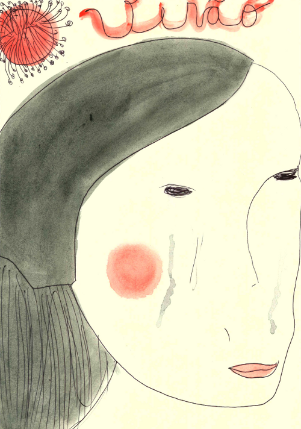

Published on
Mutirão da Gambiarra
(
http://mutgamb.org
)
Início
> Cuñá - Musa
Cuñá - Musa
Enviado por felipefonseca em ter, 28/02/2012 - 01:48

[1]
Source URL:
http://mutgamb.org/musa/cuna
Links:
[1] http://rede.metareciclagem.org/wiki/Chamada-Mutsaz-Genero-y-Tecnologia-Cuna